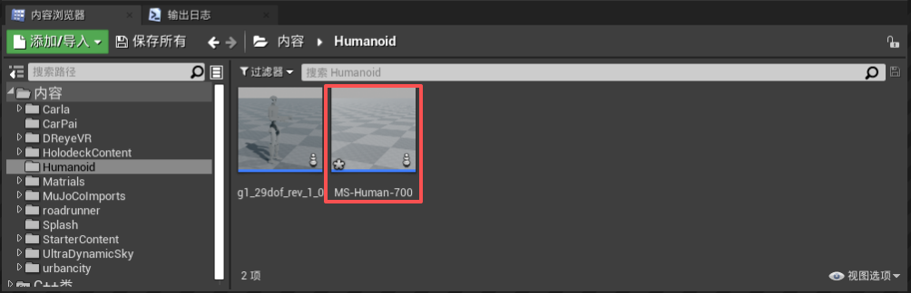

MS-Human-700.xml 导入失败：日志与解决方案
引擎：Unreal Engine 4.26（Linux） | 插件：UnrealRoboticsLab
导入模型：MuJoCo Menagerie
ms_human_700/MS-Human-700.xml模型下载地址
总结
MS-Human-700.xml 顶层没有任何 <mesh>，网格全部在<include> 文件里。导入时使用的 clean_meshes.py 不会展开 <include>，在主 XML 里没有找到网格、一个 GLB 都没生成，脚本正常退出并写出了 _ue.xml。
1. 失败现象
-
把
MS-Human-700.xml拖进内容浏览器，进度条走完后： -
蓝图能创建，但模型没有网格（缺少
Viz_*StaticMesh 组件）；

Saved/Logs/CarlaUE4.log中网格出现：
LogURLabEditor: Importing mesh from: .../assets/asset/../geometry/r_pelvis.stl
LogURLabEditor: Using automated factory detection for mesh: .../r_pelvis.stl
LogAssetTools: Warning: 导入".../assets/geometry/r_pelvis.stl"失败。未知扩展名"stl"。
LogURLabEditor: [ImportSingleMesh] Import returned 0 objects:
LogURLabEditor: Warning: Failed to import mesh 'r_pelvis' with MikkTSpace, attempting fallback
LogURLabEditor: Error: Failed to import mesh 'r_pelvis' - all import methods failed
如图所示：

2. 根因链
2.1 MS-Human-700 的网格全部在 include 文件里
MS-Human-700.xml
<include file="assets/asset/Asset_Lowerbody.xml"/>
<include file="assets/asset/Asset_Torso.xml"/>
<include file="assets/asset/Asset_Upperbody.xml"/>
<include file="assets/asset/Asset_Others.xml"/>
<include file="assets/contact/Contact_Lowerbody.xml"/>
<include file="assets/equality/Equality_Lowerbody.xml"/>
<include file="assets/equality/Equality_Upperbody.xml"/>
<include file="assets/tendon/Tendon_Leg_r.xml"/>
<include file="assets/tendon/Tendon_Leg_l.xml"/>
<include file="assets/tendon/Tendon_Arm_r.xml"/>
<include file="assets/tendon/Tendon_Arm_l.xml"/>
<include file="assets/tendon/Tendon_Torso.xml"/>
<include file="assets/muscle/Muscle_Leg_r.xml"/>
<include file="assets/muscle/Muscle_Leg_l.xml"/>
<include file="assets/muscle/Muscle_Arm_r.xml"/>
<include file="assets/muscle/Muscle_Arm_l.xml"/>
<include file="assets/muscle/Muscle_Torso.xml"/>
2.2 旧版 clean_meshes.py 不展开 <include>
旧实现只扫主树的内容：
mesh_elements = list(root.iter("mesh"))
关键点：脚本即使一个网格都没转换，也会正常退出并写出 _ue.xml。
3. 解决方案
使用支持 include 递归展开的 clean_meshes.py
脚本位置：/hutb/Unreal/CarlaUE4/Plugins/UnrealRoboticsLab/Scripts/clean_meshes.py
核心逻辑是新增递归收集函数 collect_from_include：
# 递归函数：从给定节点收集网格和 <include>，并解析包含的文件
def collect_from_include(node_root: ET.Element, owner_dir: Path):
base_dir = mesh_base if meshdir else owner_dir
for mesh_el in node_root.iter("mesh"):
file_attr = mesh_el.get("file")
if not file_attr:
continue
# 确保显式名称属性存在——如果省略，MuJoCo 默认使用文件名前缀。
# 在更改文件属性之前，我们必须保留它。
if mesh_el.get("name") is None:
implicit_name = Path(file_attr).stem
mesh_el.set("name", implicit_name)
print(f" Set explicit name='{implicit_name}' on mesh with file='{file_attr}'")
# 添加网格条目：包括 mesh 元素和源文件路径
mesh_elements.append((mesh_el, base_dir / file_attr))
for include_el in node_root.iter("include"):
file_attr = include_el.get("file")
if not file_attr:
continue
# resolve() 是 pathlib.Path 的方法：把路径规范化成唯一的绝对路径。
# 它做三件事：
# 1.变成绝对路径（相对路径拼上当前工作目录）
# 2.消掉 . 和 ..（纯字符串/路径层面的规整）
# 3.解析符号链接（symlink 指向哪，就得到真实路径）
include_path = (owner_dir / file_attr).resolve()
if include_path in seen_includes:
continue
seen_includes.add(include_path)
if not include_path.exists():
print(f" x Included file not found: {include_path}")
continue
print(f" Expanding include: {include_path}")
try:
# 得到include的文件中的根节点
include_root = ET.parse(str(include_path)).getroot()
except ET.ParseError as e:
print(f" x Failed to parse {include_path}: {e}")
continue
# 再看include文件中的 <include>，递归展开
collect_from_include(include_root, include_path.parent)
collect_from_include(root, xml_dir)